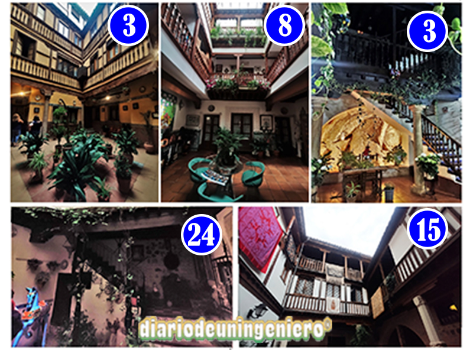

Los “Patios de Toledo” son un evento anual en el cual se puede apreciar la historia, diversidad, y arquitectura de Toledo (España). Esta tradición ocurre durante el Corpus Christi en Toledo cuando muchos Toledanos abren sus casonas, de modo gratuito, para que el público pueda ver sus patios. Los patios se adornan de forma espectacular y se abren las puertas permitiendo descubrir unos espacios privados únicos y secretos.
Durante el festival de los “Patios de Toledo” en 2022, había 30 patios que se abren al público, en varios lugares en Toledo del 15 al 18 de junio. Este festival representa a la cultura Toledana tan diversa y significativa. Los patios, con influencia árabe y romana, muestran la mezcla de culturas en Toledo, identifican su historia y herencia cultural. En el festival, hay actuaciones de muchos géneros de música en los patios, desde el pop, al flamenco, la música clásica, música sefardí, coros, y cuentacuentos.
Cada año, hay un concurso entre los patios de Toledo. Esta tradición de juzgar los patios empezó en 2000, por iniciativa de un Comité o Foro Local de Patrimonio, y bajo el auspicio del Proyecto AVEC (Alianza de Ciudades Europeas de la Cultura), en conjunto con muchos ciudadanos de Toledo, empezó con la intención de preservar y celebrar la cultura única de Toledo. Este concurso representa la movilización y unificación de mucha gente de Toledo, por una causa común. Es un ejemplo muy fuerte de la importancia de recordar y celebrar la historia y cultura de una ciudad hoy en día. La ciudad de Toledo ha creado una manera muy divertida y dinámica de preservar un aspecto muy importante de su patrimonio: el patio Toledano.
En el concurso, hay dos premios mayores, el patio que realiza la mejor celebración del XXX Aniversario de Toledo Ciudad Patrimonio de la Humanidad y los patios mejor decorados con alegorías de la festividad de Corpus Christi.8 Hay cinco premios distintos: el “Patio mejor conservado arquitectónicamente,” la “Conservación de elementos patrimoniales,” la “Intervención más creativa,” el “Mantenimiento de la estructura andalusí y conservación de sus elementos singulares,” y “El patio mejor adornado con alegorías del Corpus Christi.”
Se evalúan los patios con los criterios del jurado de la Asociación Amigos de los Patios de Toledo. La composición del jurado se realiza con miembros del Ayuntamiento de Toledo, Consorcio de la Ciudad de Toledo, Real Academia de Bellas Artes y Ciencias Históricas de Toledo, Real Fundación de Toledo, Colegio de Arquitectos de Castilla-La Mancha, Asociación Tulaytula y Junta Toledana Pro-Corpus.
No cabe duda de que los Concursos y Certámenes anuales de los Patios de Toledo, es la punta del iceberg de lo que supone el fenómeno de los patios en la Ciudad de Toledo. Son más de ciento ochenta los patios que a través de los diecisiete años de Concursos y Certámenes, se han presentado al público a lo largo de estos diecisiete años de andadura. Esta es ya una cantidad importante, que asombraría a mucha gente, pero si además decimos que la Asociación Amigos de los Patios de Toledo, tiene localizados y fotografiados cerca de cuatrocientos patios y por localizar y fotografiar algunos más, es ya una cantidad más difícil de creer.
De entrada se nos ocurre que Toledo debería ser, La Ciudad de los patios. Podemos asegurar que no hay ciudad que tenga más patios que Toledo… me refiero a patios patrimoniales, de arquitectura culta, con columnas, galerías, zapatas y canecillos, fuentes, pozos y aljibes, de una antigüedad que oscila entre el siglo XIV y el XIX (modernistas), no patinillos de ventilación de 3x3 como en los edificios modernos.
Pues es verdad, todos esos patios están en el Centro Histórico de la Ciudad de Toledo, Patrimonio de la Humanidad. Pero los Certámenes y Concursos anuales, no terminan de despegar. El público local y visitante, lo viven y lo esperan todos los años con ilusión, muchos artistas actúan en los patios durante los Certámenes desinteresadamente, los medios de comunicación, divulgan a los cuatro vientos todos los acontecimientos que originan estos Certámenes, pero las Administraciones no terminan de apoyar a la Asociación, como según estos números deberían de interesarles..


De todos estos patios los más bonitos son oficiales como los siguientes:
Y de los no oficiales a los que yo les daría el premio en la edición 2022, serían estos 5:
Hay diferentes estilos de patio que se encuentra en Toledo. Según el toledano Profesor, D. Guillermo Téllez, gran estudioso de la casa toledana, en su ensayo “La Casa Toledana,” hay influencia árabe, gótica, mudéjar, renacimiento, barroca, y neoclásica en los patios de Toledo, cada una con distintas características.4 Téllez ha elegido un ejemplo específico y arquetípico de cada estilo de patio, algunos están en Toledo, y los demás son de otros sitios de España. Se puede ver los diferentes estilos a través de una serie de características: la forma y dimensiones, las galerías, las zapatas, los pilares, la altura, y los pies derechos son algunos ejemplos.
© 2016 - All Rights Reserved - Diseñada por Sergio López Martínez
El sitio se mantiene gracias a la publicidad, por favor Desactiva Adblock para seguir navegando
He desactivado Adblock![[Valid RSS]](https://www.onepointsync.com/wp-content/uploads/2016/08/valid-rss-rogers.png "Validate my RSS feed")